| 日付 | 2007年7月28日（土） |
|---|---|
| 山域 | 奥秩父 |
| メンバー | 単独 |
| 山行形態 | 日帰り |
| アクセス | 電車、バス |
| ルート (Map) | 日向大谷口→清滝小屋→両神山→八丁峠→坂本 |
夏山シーズンに向けて、岩場のあるロングコースを歩く。
9:40 日向大谷口バス停到着。標高650m。
電車を乗り継ぎ、バスを乗り継ぎ4時間かけてようやく辿り付く。
駐車場はすでに車でいっぱい。
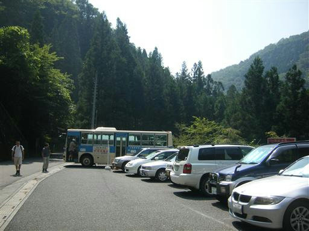
今日の天気はそこそこ。
気温が高く、ものすごく暑い。
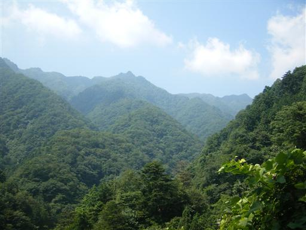
登山道入口付近にあった石仏。
この山は歴史のある山なので、こういったものがたくさんある。
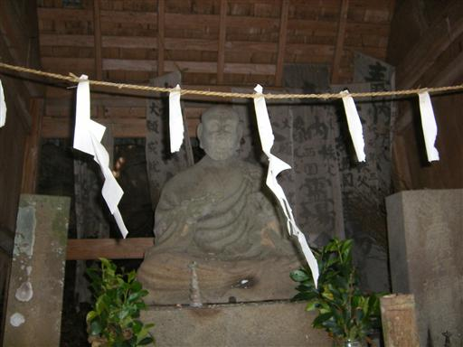
大きなカエルを発見。
体長10～15cmくらい。
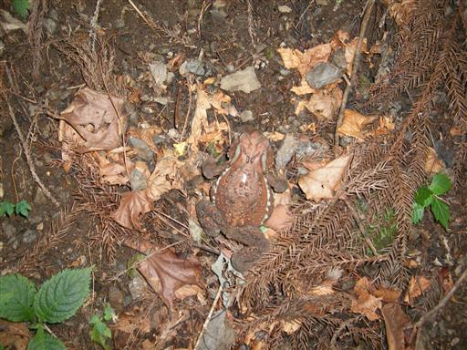
清滝小屋に到着。ここで一泊すると楽な登山になる。
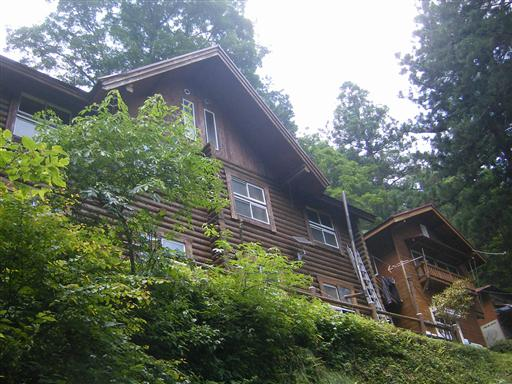
清滝小屋にいた犬。人馴れしている。
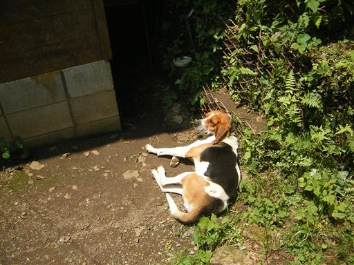
最初の鎖場が現れる。この山の山頂直下は岩が多い。
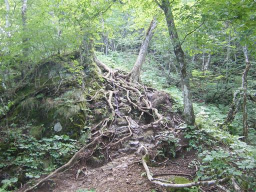
両神神社に到着。
鳥居と小さな建物が建っている。
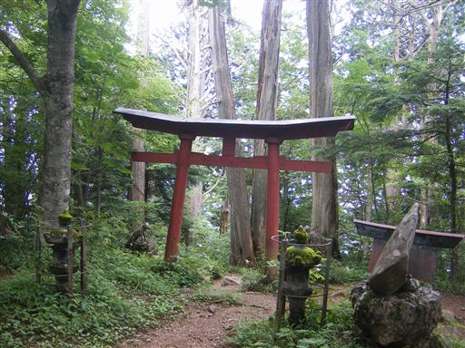
変わった形をした狛犬があった。
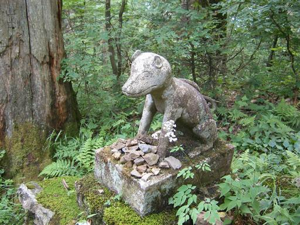
山頂直下の鎖場を登る。山頂はもうすぐ。

13:03 両神山山頂到着。標高1723m。
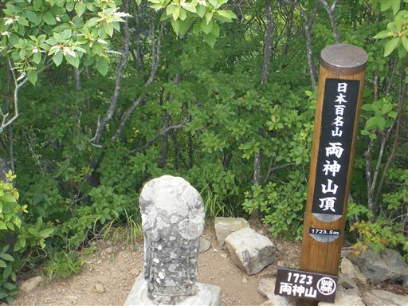
山頂からの眺め。山が幾重にも折り重なって見える。
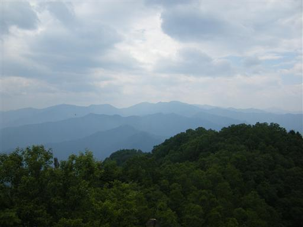
13:45 昼食をとって山頂出発。
八丁尾根に向かう。
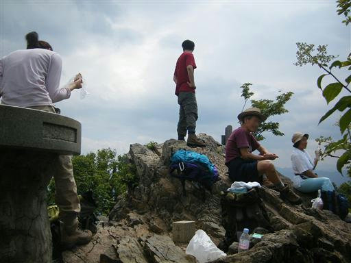
いきなり登山道が難しくなる。
道が薄くなり、鎖場が連続で現れる。
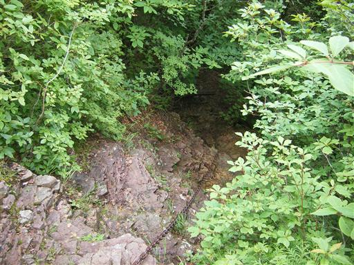
八丁尾根は両側が切れ落ちているので、展望がよい。
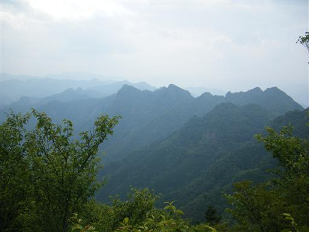
東岳に到着。標高1660m。
非常に展望のよいピーク。
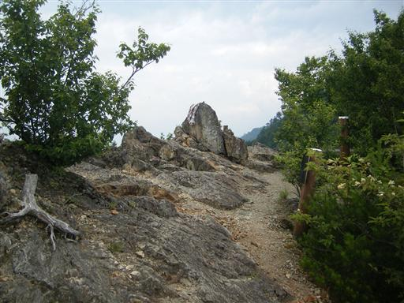
東岳付近からの眺め。大きな岩峰が見える。
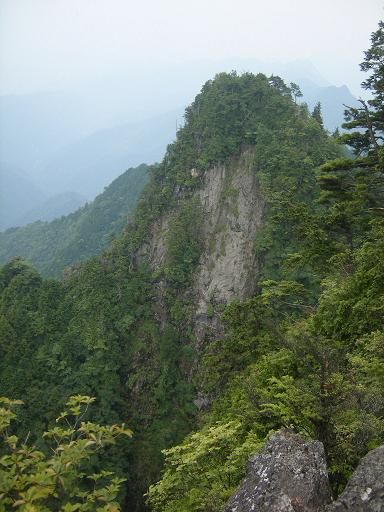
鎖場を下る。登り下りと鎖場が連続する。
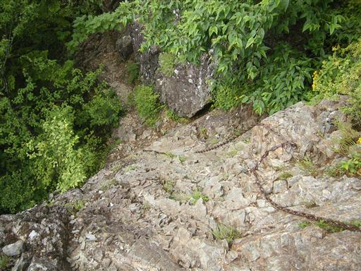
これから登り返していく険しい尾根道がよく見える。
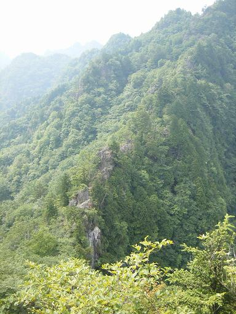
竜頭神社奥宮。こんなところにも社が建っている。
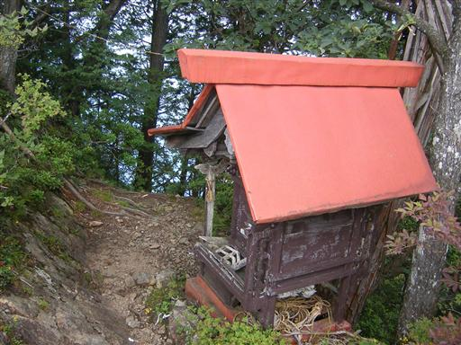
鎖場は続く。鎖場の数は20ヶ所を超える。

鞍部を挟んだ向かい側には鎖場を降りる人が見える。
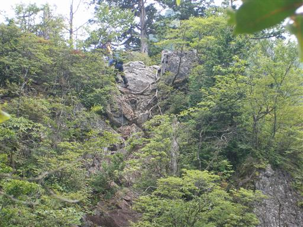
西岳に到着。標高1613m。
ここまでくれば八丁峠はもうすぐ。
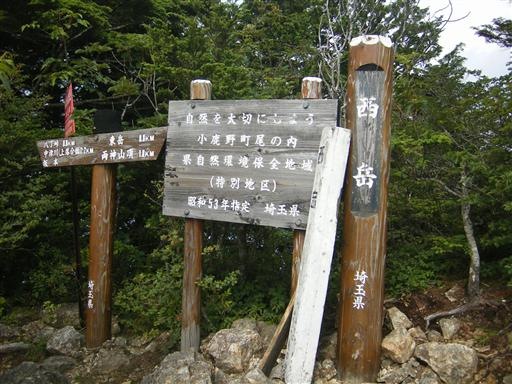
八丁峠付近から、両神山から続く尾根を眺める。
峠には50代くらいの夫婦がいた。
どこから来たのか訪ねると赤岩尾根（鎖すらない超難ルート）からとのこと。
世の中にはいろんな人がいるものだ。
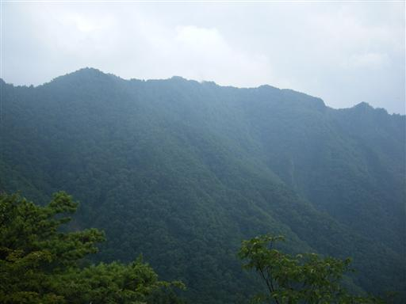
八丁峠からの下山道は簡単かと思いきや、
植物が繁茂してルートが見えない。
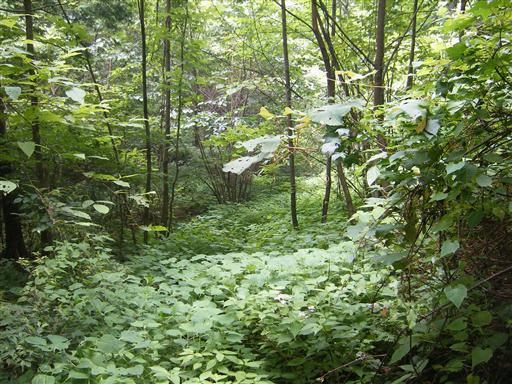
沢を何度も渡り返す道が続く。
踏跡は薄く、何度も立ち止まってルートを確認しながら下る。

美しい幹を持った、巨木に出会う。
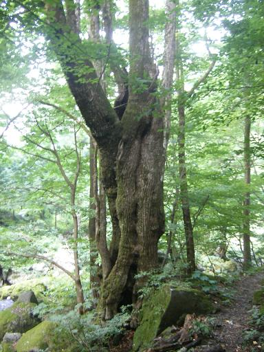
遠くのほうに二子山の大岩峰が見える。
だいぶ下のほうまで下りてきた。
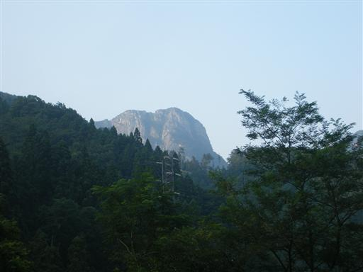
18:01 坂本バス停到着。標高505m。
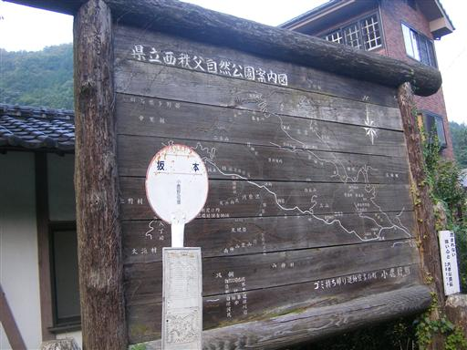